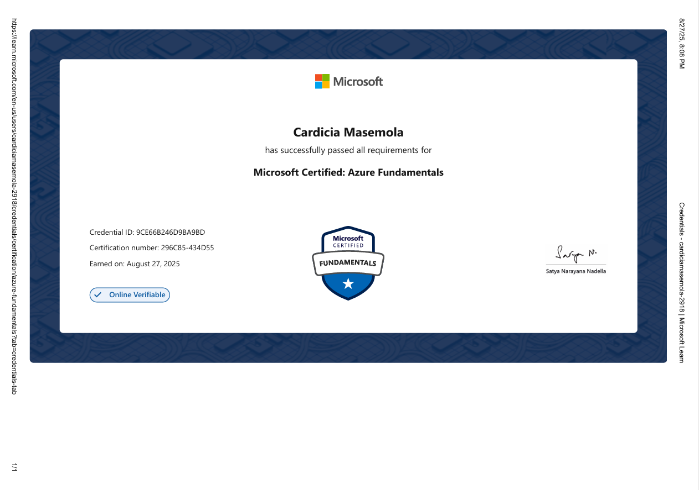
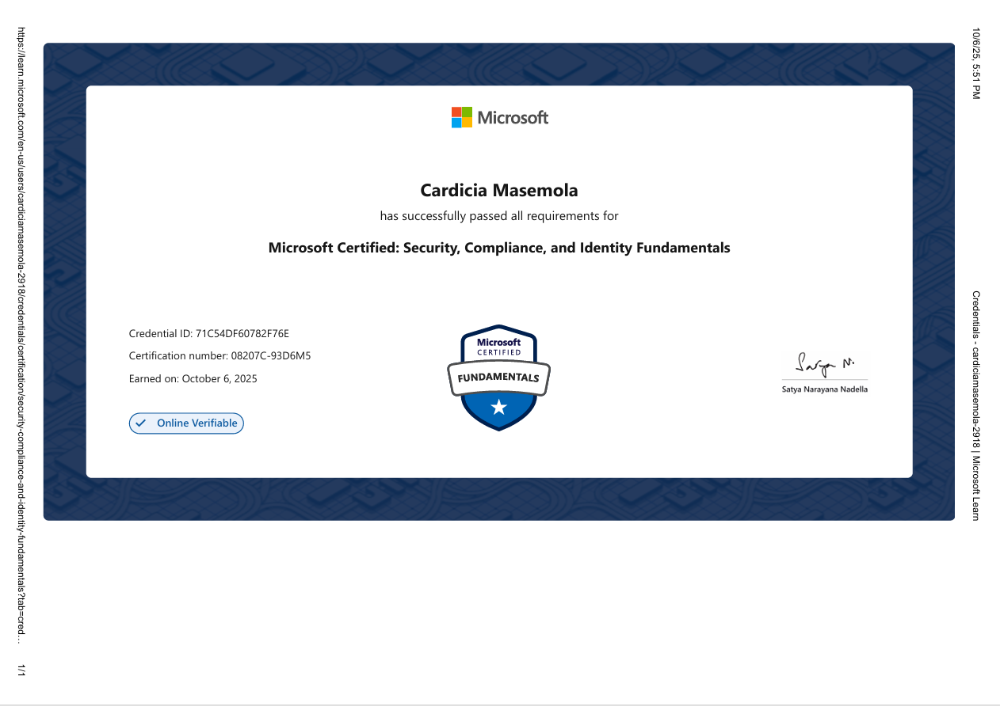
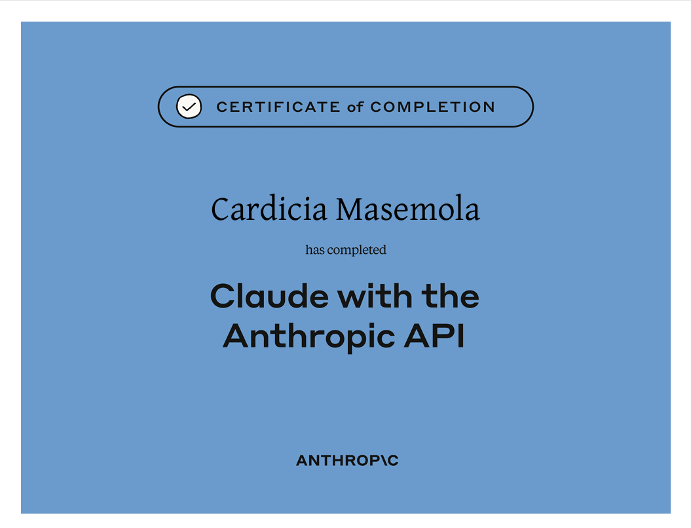
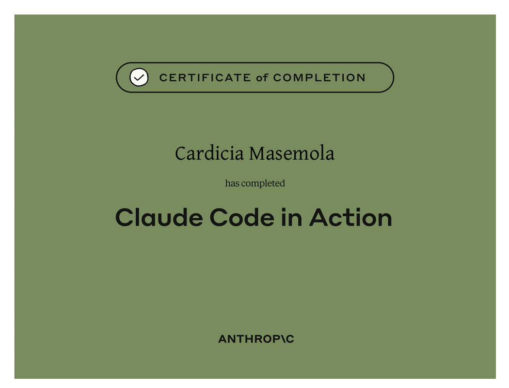
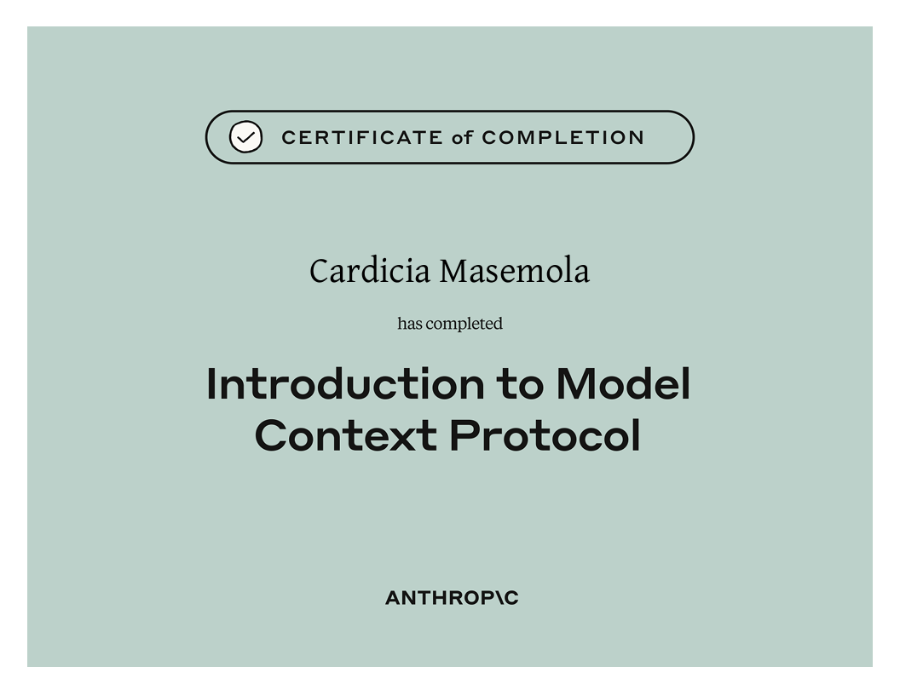
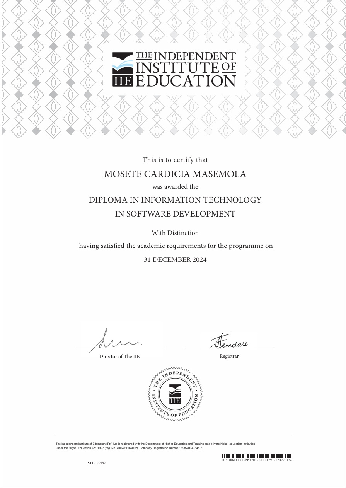

Python
AI applications, automation and backend development.
I'm Mosete Cardicia Masemola, an AI Software Developer and Full Stack Developer focused on turning real-world problems into useful, reliable software.
const developer = {
name: "Mosete Cardicia Masemola",
role: "AI Software Developer",
focus: [
"Full Stack",
"AI / LLMs",
"APIs",
"SQL"
]
};
_
01 / ABOUT
I enjoy solving technical problems and building software that is practical, understandable and useful. My experience spans AI-powered applications, application development, APIs, databases and web development.
I'm looking to grow into a junior software development, junior full-stack or junior AI role where I can contribute to real products while continuing to deepen my engineering skills.
02 / STACK
AI applications, automation and backend development.
Application development, OOP and ASP.NET Core.
Interactive frontend experiences and web development.
Relational data, CRUD operations and database integration.
AI APIs, Claude, LLM applications and MCP.
REST APIs, integrations and application communication.
03 / PROJECTS
AI SOFTWARE · CURRENT ROLE
AI-powered information processing and chatbot solution designed to support automated workflows and accurate document-based information retrieval.
FULL STACK · WEB APP
A clinic queue-management application designed to improve patient booking and queue processes.
ACADEMIC · DESKTOP
A C# WPF recipe management application with CRUD operations, search and SQL database integration.
ACADEMIC · DATABASE
A normalized relational database designed with ER modelling and Third Normal Form principles.
04 / CREDENTIALS
Professional certifications and AI-focused learning completed alongside practical development experience.

AZ-900

SC-900

AI API Development

AI Development

MCP
05 / EDUCATION
Rosebank College
Foundation across software development, C#, Java, SQL, web development, object-oriented programming, testing, Agile/Scrum and DevOps.

06 / CONTACT
Have a junior developer opportunity, project or AI idea? Connect with me on LinkedIn.